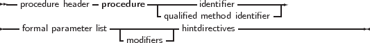
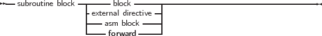

A procedure declaration defines an identifier and associates it with a block of code. The procedure can then be called with a procedure statement.
_________________________________________________________________________________________________________
Procedure declaration


___________________________________________________________________
See section 14.4, page 689 for the list of parameters. A procedure declaration that is followed by a block implements the action of the procedure in that block. The following is a valid procedure :
Note that it is possible that a procedure calls itself.